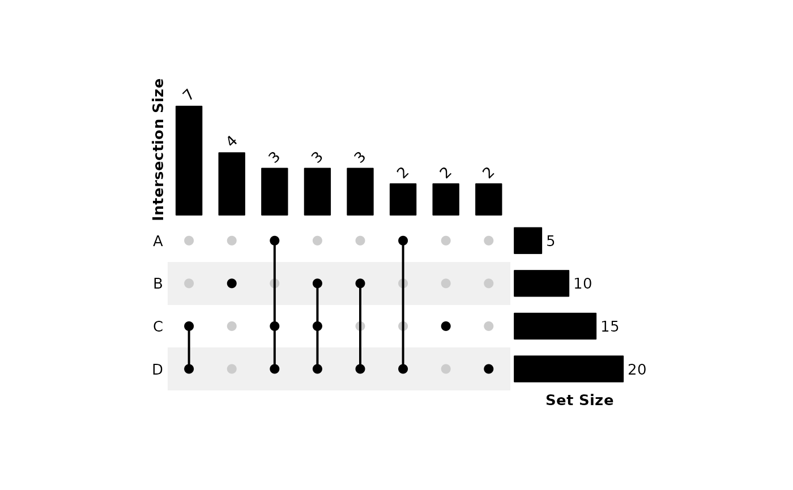
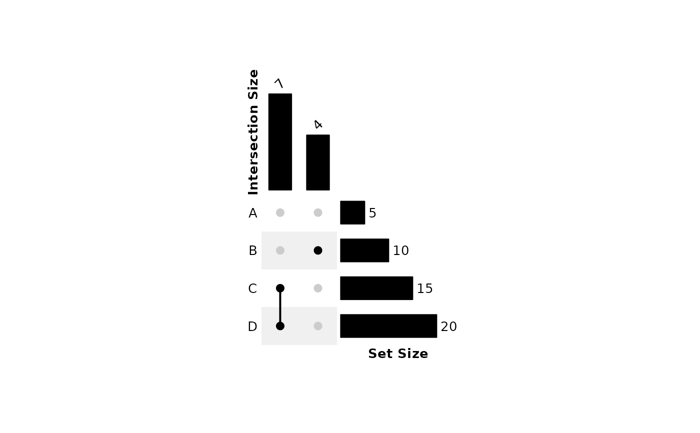
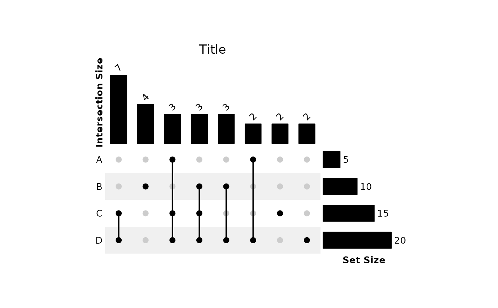

plot_upset.RdA wrapper around functions from
ComplexHeatmap-package. Creates an
UpSet plot with labeled
bars to visualize relationships between sets. UpSet plots are preferred to
Venn diagrams, especially when the number of intersections is large.
plot_upset(
...,
mode = c("distinct", "intersect", "union"),
top_n_comb = Inf,
scale_set_bars = FALSE,
row_labels = character(0),
row_names_gp = gpar(fontsize = 10),
annotation_name_gp = gpar(fontsize = 10, fontface = "bold"),
heatmap_args = list(),
cell_dim = unit(10, "mm"),
extend = 0.2,
rot = 45,
hjust = 0,
vjust = 0,
bar_label_gp = gpar(fontsize = 10),
filename = character(0),
height = 3.5,
width = 7
)Input sets (a list is recommended). See
make_comb_mat for details.
The mode for forming the combination set, see Mode section of
make_comb_mat.
Number of largest intersections to display. Defaults to all intersections.
logical; whether to scale set size bars so that their lengths are proportional to the lengths of the intersection size bars.
vector of labels for the rows. Defaults to the names of the input sets.
graphical parameters for row labels specified by
gpar.
graphical parameters for barplot titles specified
by gpar.
list of additional arguments passed to
Heatmap.
unit object used for both the height and
width of each heatmap cell.
numeric; multiply y-axis upper limit by (1 + extend).
Increase to prevent clipping of barplot labels and overall title.
numeric [-360, +360]; angle to rotate column barplot labels.
numeric [0, 1]; horizontal justification of column barplot labels.
numeric [0, 1]; vertical justification of column barplot labels.
graphical parameters for barplot labels specified by
gpar.
character; name of the file to save the plot. Must end in ".png", ".bmp", ".jpg", ".tif", or ".pdf". If not provided, the UpSet plot will be displayed instead of saved.
numeric; height of the entire plot in inches.
numeric; width of the entire plot in inches.
An object of class HeatmapList-class or
nothing (save to file instead).
split is useful for creating input lists.
Gu, Z., Eils, R., & Schlesner, M. (2016). Complex heatmaps reveal patterns and correlations in multidimensional genomic data. Bioinformatics, 32(18), 2847-2849. https://doi.org/10.1093/bioinformatics/btw313
Lex, A., Gehlenborg, N., Strobelt, H., Vuillemot, R., & Pfister, H. (2014). UpSet: Visualization of Intersecting Sets. IEEE transactions on visualization and computer graphics, 20(12), 1983-1992. https://doi.org/10.1109/TVCG.2014.2346248
# Input list
set.seed(99)
x <- list(A = sample(letters, 5),
B = sample(letters, 10),
C = sample(letters, 15),
D = sample(letters, 20))
# Base plot
plot_upset(x)

# Change label rotation and center horizontally
plot_upset(x, rot = 0, hjust = 0.5)
# Top 2 largest intersections
plot_upset(x, top_n_comb = 2)

# Add overall title
plot_upset(x, heatmap_args = list(column_title = "Title"))

if (FALSE) { # \dontrun{
# Save to 3.5" by 7" PDF
plot_upset(x, filename = "upset_plot.pdf")
} # }